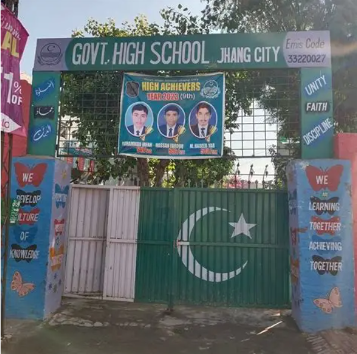
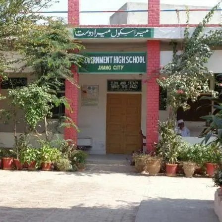
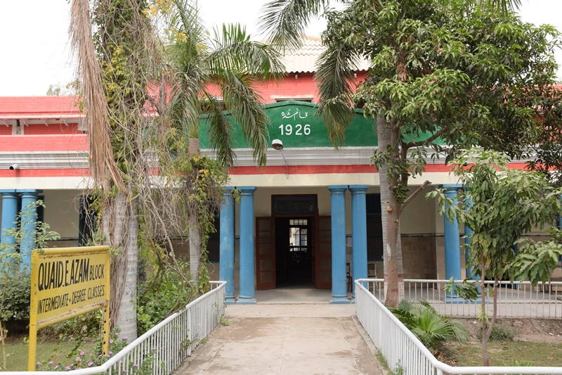
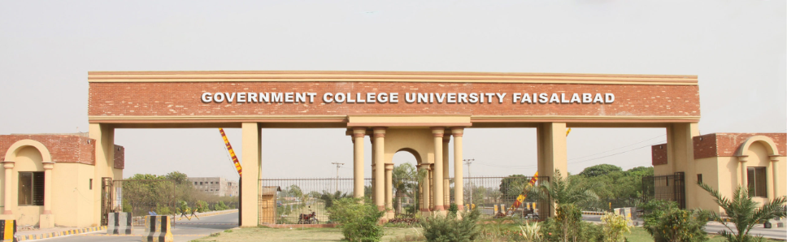

Education:
My educational journey reflects my dedication, consistency, and passion for learning.
I completed my middle school education (Classes 6–8) at Government Boys High School, Jhang City, where I maintained an excellent academic record and developed a strong interest in science and mathematics.

From 2021 to 2023, I continued my studies at the same school and completed my Matriculation (SSC) under the Board of Intermediate and Secondary Education (BISE) Faisalabad with a Biology major. I secured 1,014 out of 1,100 marks , demonstrating strong academic performance.

After completing Matric, I joined Government Graduate College, Jhang for my Intermediate (F.Sc. Pre-Engineering). I studied there from 2023 to 2025 under BISE Faisalabad and achieved 1,030 out of 1,200 marks. During this time, I strengthened my foundation in Mathematics, Physics, and Computer-related problem-solving.

Currently, I am pursuing a Bachelor of Science in Software Engineering (BSSE) at Government College University Faisalabad (GCUF). I successfully completed my first semester with a CGPA of 3.97 out of 4.00, reflecting my commitment to academic excellence. My second semester results are currently awaited.

Alongside my university studies, I am continuously enhancing my technical skills by learning C++, Python, HTML, CSS, and JavaScript, while building practical projects to prepare myself for a successful career in software engineering.